Галерея: ШІ у зображеннях
Як «виглядає» штучний інтелект? Зовні це звичайна програма, але процеси всередині неї можна показати наочно. Натисніть на мініатюру, щоб відкрити зображення в повному розмірі (1024×683 пікселів). Усі зображення створено мовою Python за допомогою бібліотек matplotlib і scikit-learn.

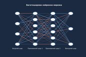
Багатошарова нейронна мережаВхідний шар, два приховані та вихідний. Товщина лінії показує вагу зв'язку.

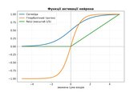
Функції активаціїСигмоїда, гіперболічний тангенс і ReLU — «перемикачі» штучного нейрона.
 Межа рішень нейромережі
Межа рішень нейромережіМережа навчилася розділяти два класи точок, що мають форму півмісяців.

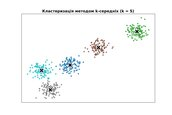
Кластеризація k-середніхНавчання без учителя: точки згруповано в 5 кластерів, хрестики — їхні центри.

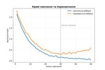
Криві навчанняКоли помилка на перевірочних даних зростає, модель починає перенавчатися.

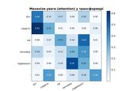
Механізм увагиТрансформер визначає, які слова речення найтісніше пов'язані між собою.

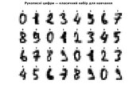
Рукописні цифриЗображення 8×8 пікселів, на яких класично навчають системи розпізнавання.

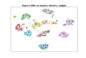
Карта t-SNE64-вимірні зображення цифр, відображені на площину: схожі цифри збираються разом.

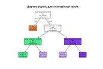
Дерево рішеньМодель класифікує квіти ірису, ставлячи послідовність простих запитань.

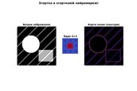
ЗгорткаЯдро 3×3 проходить зображенням і виділяє контури — так «бачить» згорткова мережа.

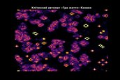
Гра «Життя»Клітинний автомат Конвея: прості правила породжують складну поведінку.

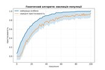
Генетичний алгоритмПристосованість популяції зростає з кожним поколінням завдяки відбору та мутаціям.